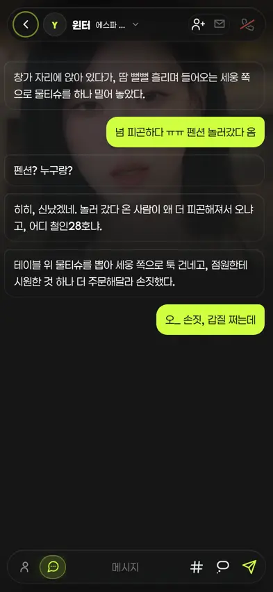
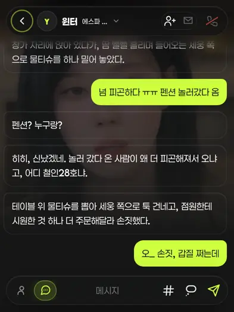
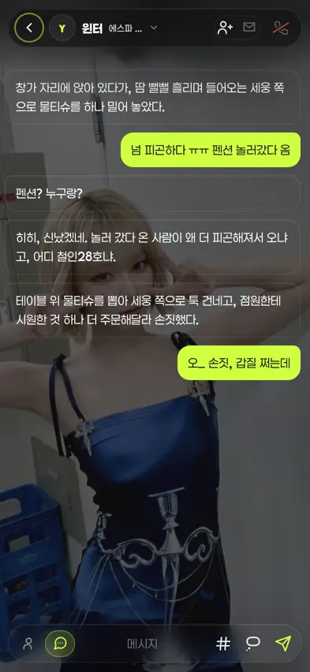
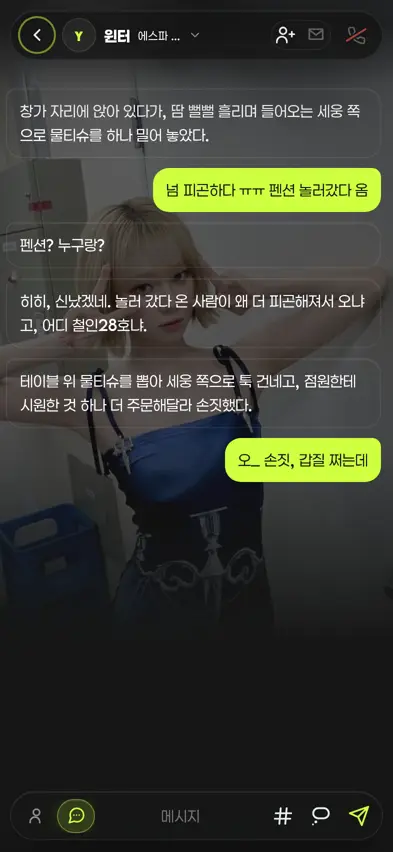

챗 배경 폭 맞춤 — 전/후 (372차)
운영자 260809 「키보드 올라올때랑 아닐때 배경 크기가 차이나는디 · 항상 키보드 올라올때 크기처럼 최대한 이미지를 다 활용해줘」 → 안B(폭 맞춤) 채택. 아래는 실제 뷰어 렌더 스샷(393×852 · DPR2 · 윈터 방 · 재현 시안 아님).
원인 — cover는 상자 높이로 배율이 정해진다
키보드가 뜨면 yVvFit이 창을 visualViewport.height로 줄인다(852 → 522px). .ybg는 그 창을 그대로 덮는 레이어라, 같은 그림이 딴 배율로 다시 잡혔다.
| 그림 | 키보드 없음(852px) | 키보드 올라옴(522px) | 전(cover) 차이 | 후(폭 맞춤) |
|---|---|---|---|---|
| 정사각 899×899 | ×0.948 · 가로 46%만 보임 | ×0.581 · 가로 75% | 배율 1.63배 요동 | ×0.437 · 가로 100% · 요동 0 |
| 9:16 1080×1920 | ×0.444 · 가로 82% | ×0.364 · 가로 100% | 배율 1.22배 요동 | ×0.364 · 가로 100% · 요동 0 |
① 정사각 아트(899×899) — 전 2컷 / 후 2컷
전키보드 없음 · cover

가로 46%만 남아 「눈만 확대」. 운영자 스샷 1과 동일 상태.
전키보드 올라옴 · cover

같은 그림이 딴 크기로. 운영자가 「이 크기로 해달라」 한 상태.
후키보드 없음 · 폭 맞춤

사진 가로가 통째로. 남는 세로는 스크림 마지막 정거장(var(--bg))으로 스며 경계선 0.
후키보드 올라옴 · 폭 맞춤

왼쪽 컷과 프레이밍 동일 — 폭 기준은 높이에 무관하니 키보드가 떠도 안 움직인다.
② 9:16 씬(1080×1920) — 꽉 채우던 그림은 어떻게 되나
전cover · 가로 18% 잘림

후폭 맞춤 · 가로 100% · 아래 153px 스밈

9:16은 잘림이 원래 적어 변화도 작다(가로 82% → 100%). 인물 팔·소품이 잘리던 좌우가 돌아온다.
고친 결 — 신규 색·토큰 0
.ybg.fit신설 —background-size:100% calc(100vw * var(--ybg-ar) + 1px), 100% auto·background-position:center top·no-repeat(필수). 폭 기준은 높이에 무관 = 키보드 개폐로 프레이밍 불변.--ybg-ar(그림 세로/가로) =yBgFit()이 자연크기 실측 주입(캐시면 동기 확정) · 폴백 16/9. 스크림 층만 사진 실높이에 맞춘다(사진 층은auto가 스스로).- 스크림 마지막 정거장 =
var(--bg)(92%에서 불투명 도달 후 100%까지 물림) — 사진 밑단이 창 밑판으로 스며 하드 엣지 0. 종전 딤 두 정거장(d1·d2)은 값 그대로. - 클립(
.ybg.fit video)도 같은 축 — 높이는aspect-ratio로 확정, 밑단 페이드는 마스크(정거장 62% = 스크림과 동일 지점). - 대가: 좌우 드래그 배경 패닝은 무효(가로 슬랙 0). 운영자가 안B를 고르며 인지·수용. 배선은 축 잠금 때문에 존치.
실측 잔버그 2건(이 작업 중 발견·봉합)
- 밝은 실선: 스크림 층과 사진 층 높이를 똑같이 두면 반올림이 갈려 사진 마지막 한 줄이 스크림 밖으로 샜다(698.675px 경계에서
rgb(120,127,143)실측) → 스크림+1px(광학 1px 예외축)로 봉합. 재실측 = 경계 전후 전부rgb(22,23,22)=--bg. - 클립 납작:
height:auto만 두면 메타데이터 로드 전 UA 기본 150px로 눌렸다(실측) →aspect-ratio:1 / var(--ybg-ar)로 확정. 재실측 393×699.